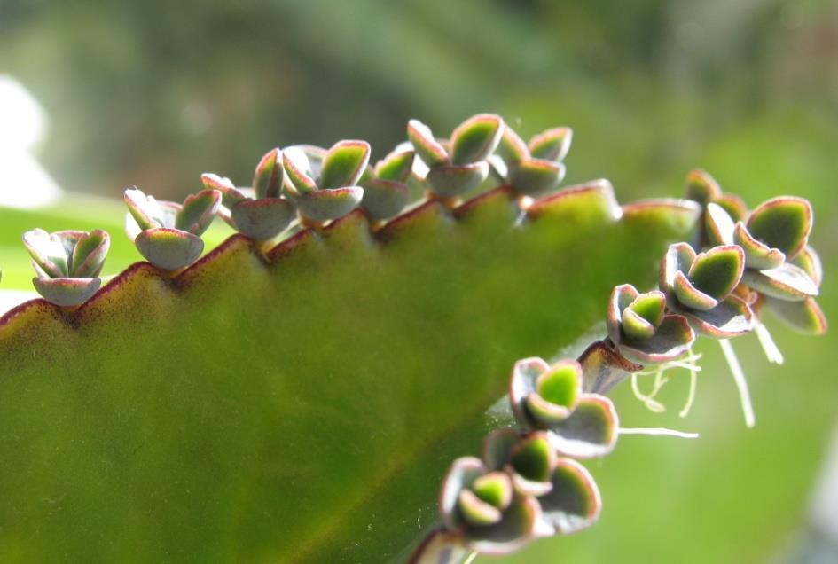
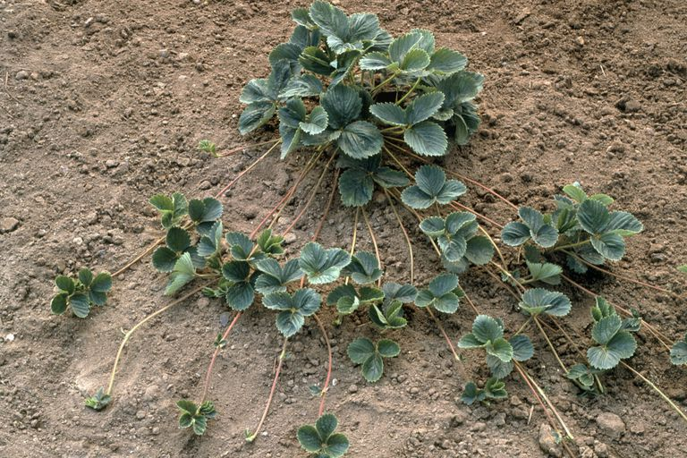
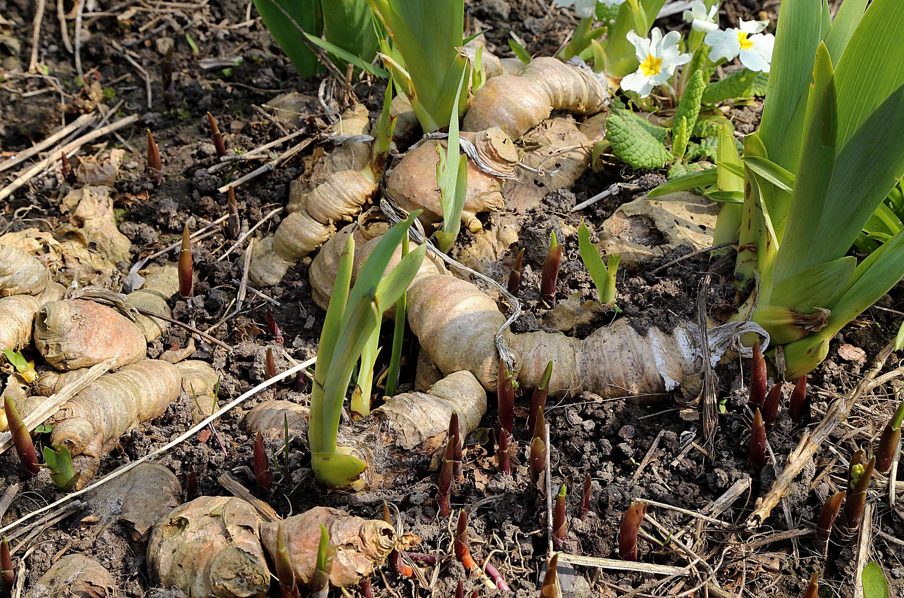
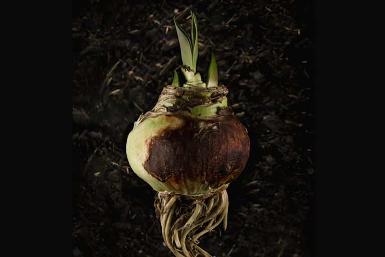
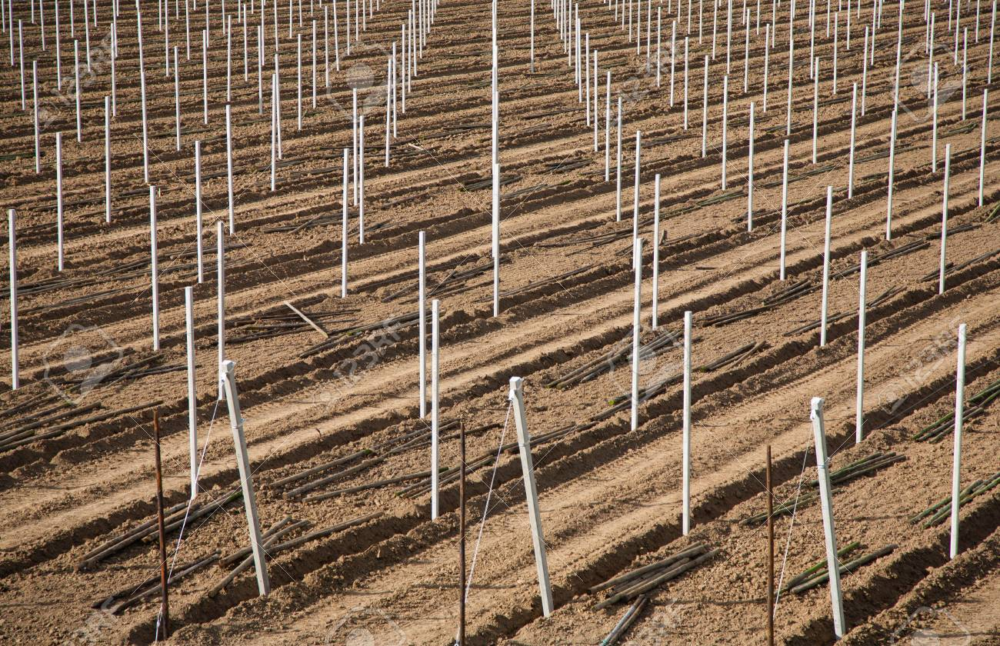
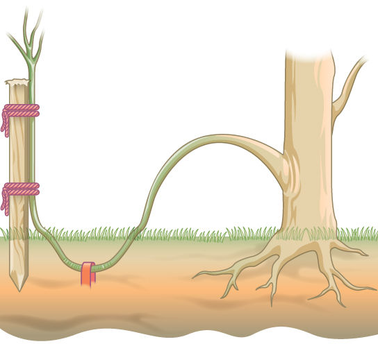
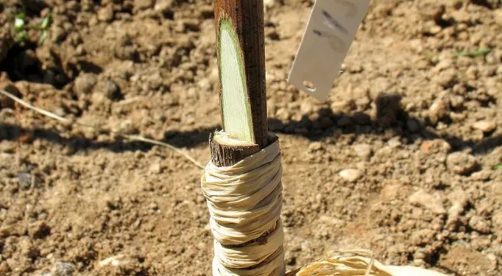

Propagação Vegetativa
É um tipo de reprodução assexuada exclusivo das plantas, semelhante à fragmentação,
que ocorre devido à existência dos meristemas, que são equivalentes às células estaminais dos animais.
Ocorre quando os meristemas se fragmentam, separando-se da planta-mãe e dando origem a uma nova planta.
Este processo pode dar-se de forma natural, ou ser induzido pelo homem.
Propagação Vegetativas Natural
Pode dar-se através da separação de diversos tipos de fragmentos, sendo os mais comuns as folhas,
os caules aéreos e os caules subterrâneos.
Folhas: Ocorre através das folhas quando se desenvolvem pequenos fragmentos nas margens destas,
os quais, ao cair no solo, dão origem a uma nova planta. É o caso de plantas como o kalanchoe e as suculentas.

Estolhos: Ocorre através de caules aéreos que saiem do caule principal e, ao entrar em contacto com o solo,
dão origem a novas plantas, sendo que o caule principal morre. É o caso dos morangueiros e das begónias.

Rizomas: Ocorre através de caules subterrâneos capazes de se alongar e dar origem a gemas,
as quais se diferenciarão em novas plantas. Os rizomas são capazes de sobreviver mesmo que a parte aérea da planta
morra devido a condições desfavoráveis. É o caso dos lírios, dos bambus e dos fetos.

Tubérculos: Ocorre através de caules subterrâneos que possuem gomos com capacidade
germinativa que dão origem a novas plantas. É o caso das batatas e das batatas-doces.
Bolbos: Ocorre através de caules subterrâneos que possuem um gomo terminal rodeado por camadas de folhas
carnudas, sendo que , quando as condições são favoráveis, formam-se gomos laterais que se rodeiam de folhas carnudas
e dão origem a novas plantas. É o caso da cebola e das tulipas.

Propagação Vegetativa Artificial
É utilizada no setor agroflorestal, na fruticultura, na viticultura, na floricultura e na sivicultura.
Tem certas vantagens económicas, permitindo a seleção da variedade de plantas com as características mais
desejáveis e reproduzi-las em grande quantidade, rapidamente, conservando as características selecionadas e permitindo
obter um produto mais barato.
~
Tem, porém, as suas desvantagens, já que, sendo as plantas produzidas, clones do progenitor, a falta de variabilidade
genética torna o aparecimento de condições ambientais desfavoráveis às variedades existentes perigoso para a sobrevivência
da espécie, podendo levar ao seu desaparecimento ou mesmo à sua extinção.
Os métodos mais uzados de reprodução vegetativa artificial são:
A Estacaria: Consiste na introdução de fragmentos de uma planta no solo, a partir dos quais
surgem raízes e gomos que dão origem a uma nova planta.

A Mergulhia: Consite em dobrar um ramo de uma planta até enterrá-lo no solo. A parte enterrada criará raízes,
originado uma planta independente. Uma variedade da mergulhia é a alporquia, na qual se corta uma parte da casca de um ramo
e envolve-se esta parte num plástico com terra, chamado alporque de forma a promover o aparecimento de raízes.

A Enxertia: Consiste na junção das superfícies cortadas de duas plantas diferentes. As plantas envolvidas na
enxertia são, normalmente, da mesma espécie ou de espécies semelhantes. A parte da planta que recebe o
enxerto chama-se cavalo, ou porta-enxerto, e a parte da planta dadora chama-se garfo, ou enxerto.

Nota: A formação de esporos pode também ocorrer em casos de reprodução sexuada.